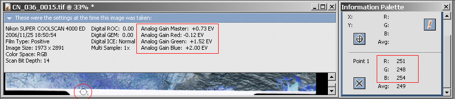

| Если Ваш сканер поддерживает аналоговую настройку усиления, настройте её так, что бы межкадровый промежуток имел цвет максимально близкий к белому, но не достигал значений 255. На пример вот так: |  |
All contents copyright © vgrin, Ver 1.00 February 11, 2007.